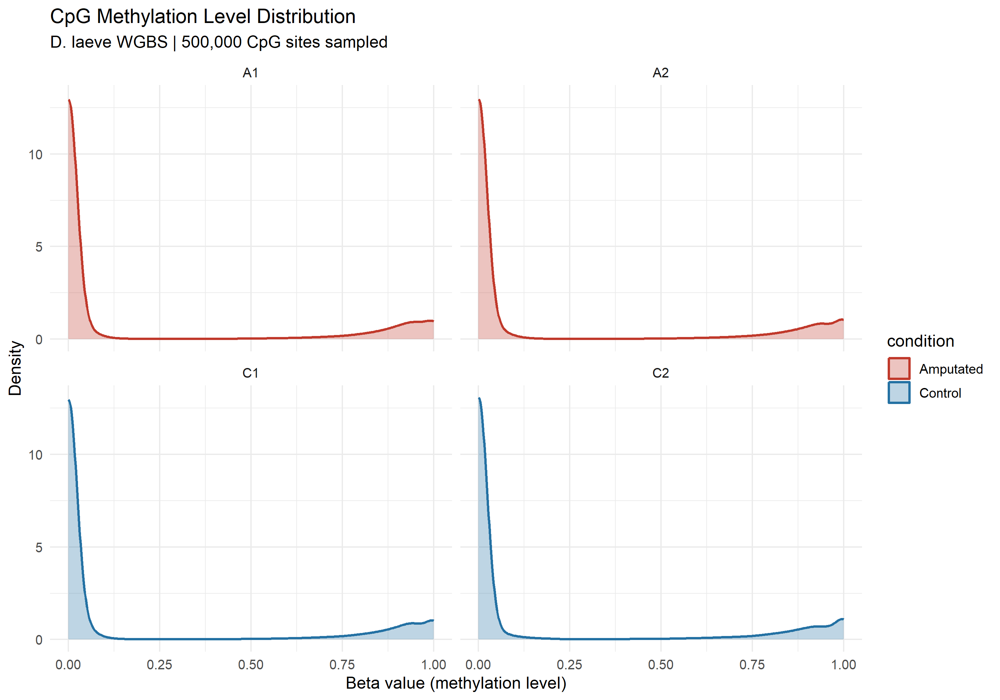
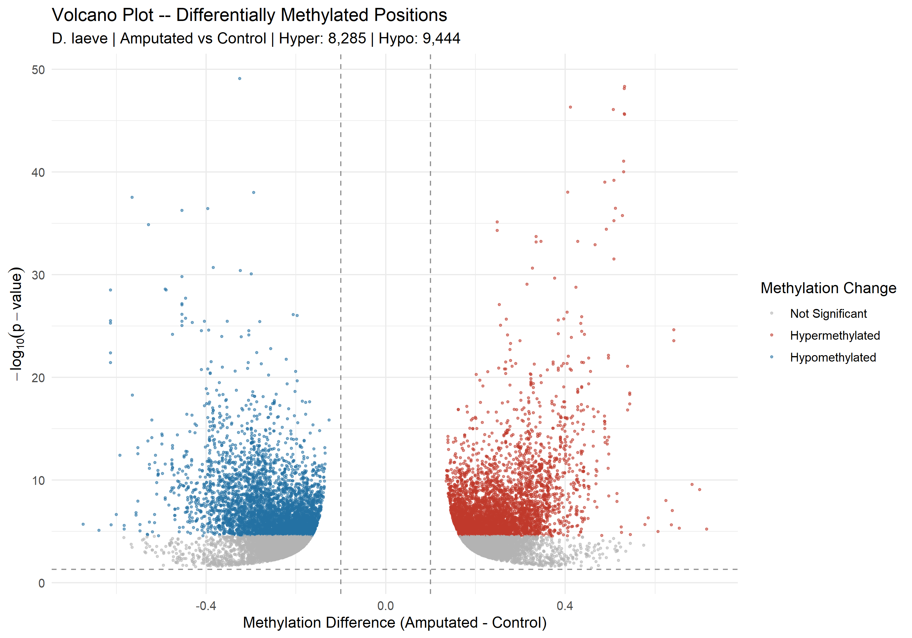
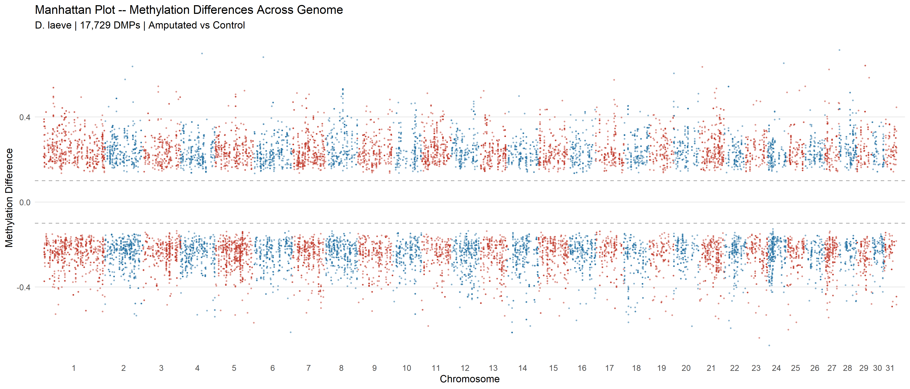
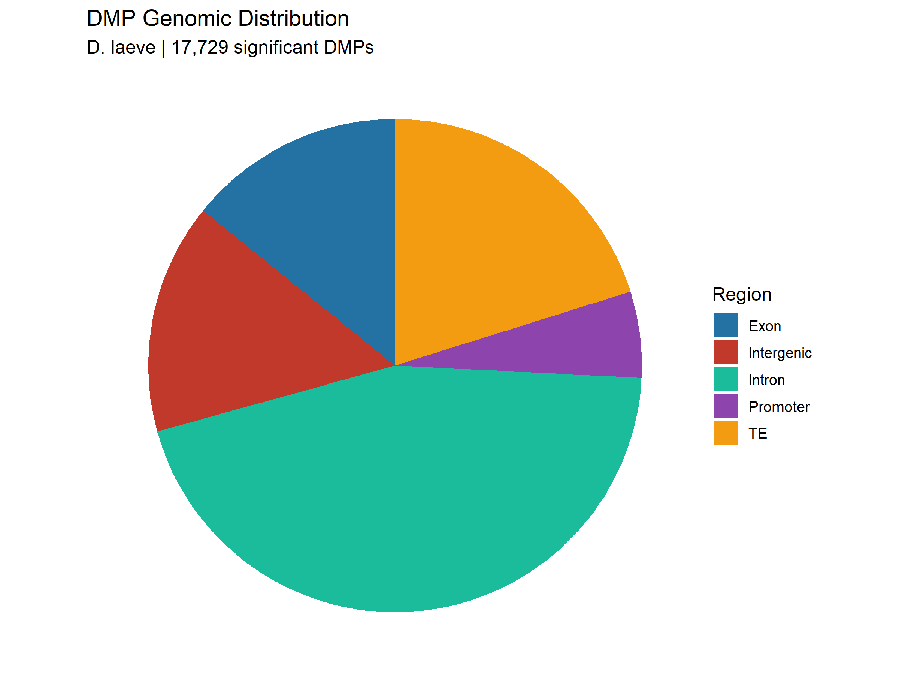
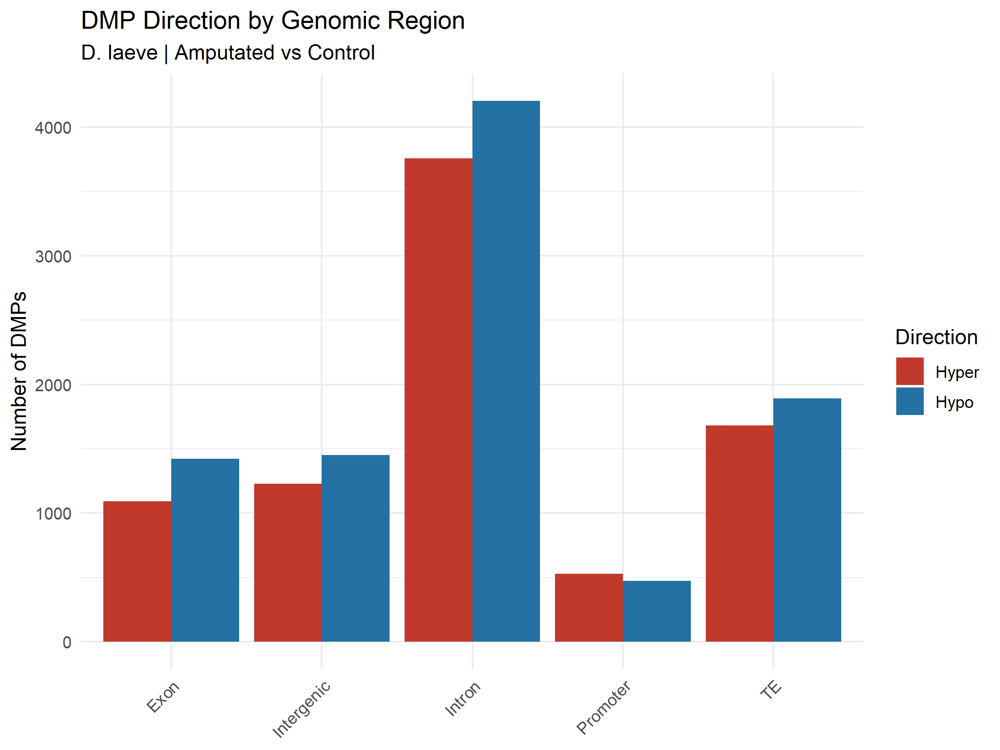
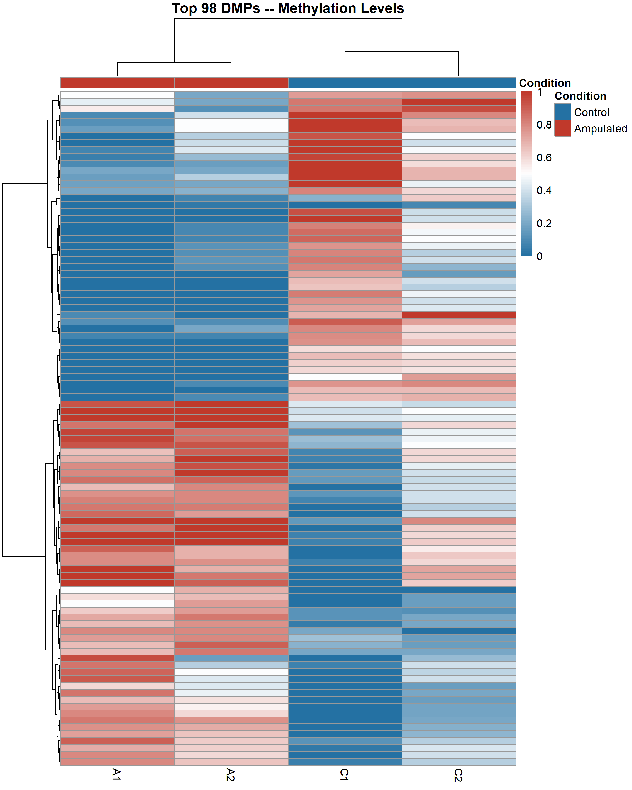

Adapted from NGS101 for D. laeve tail regeneration | Generated: 2026-03-21
Design: 2 Control (C1, C2) vs 2 Amputated (A1, A2) tail samples
FULL GENOME RUN -- all CpG sites, DSS smoothing enabled, native Windows R
| Total CpG sites analyzed | 25,439,068 |
| Significant DMPs (FDR < 0.05, |diff| > 10%) | 17,729 |
| Significant DMRs | 1,462 |
| Hypermethylated DMPs | 8,285 |
| Hypomethylated DMPs | 9,444 |
| Hypermethylated DMRs | 690 |
| Hypomethylated DMRs | 772 |
| Mean DMR length (bp) | 264 |
| Mean CpGs per DMR | 7.5 |
| DMLtest smoothing | TRUE |
| Analysis time (minutes) | 209.8 |
| Sample | Condition | Sites | Mean Beta | Median Beta | High (>0.8) | Low (<0.2) | Intermediate |
|---|---|---|---|---|---|---|---|
| C1 | Control | 25,439,068 | 0.1811 | 0.0000 | 4,085,298 | 20,246,227 | 1,107,543 |
| C2 | Control | 25,439,068 | 0.1801 | 0.0000 | 3,939,199 | 20,216,130 | 1,283,739 |
| A1 | Amputated | 25,439,068 | 0.1815 | 0.0000 | 4,129,673 | 20,241,594 | 1,067,801 |
| A2 | Amputated | 25,439,068 | 0.1815 | 0.0000 | 4,080,949 | 20,239,617 | 1,118,502 |








| Region | Count | % |
|---|---|---|
| Intron | 7,962 | 44.9 |
| TE | 3,573 | 20.2 |
| Intergenic | 2,681 | 15.1 |
| Exon | 2,514 | 14.2 |
| Promoter | 999 | 5.6 |

| Region | Count | % |
|---|---|---|
| Exon | 216 | 14.8 |
| Intergenic | 219 | 15.0 |
| Intron | 625 | 42.7 |
| Promoter | 91 | 6.2 |
| TE | 311 | 21.3 |
Full-genome analysis (native Windows R):